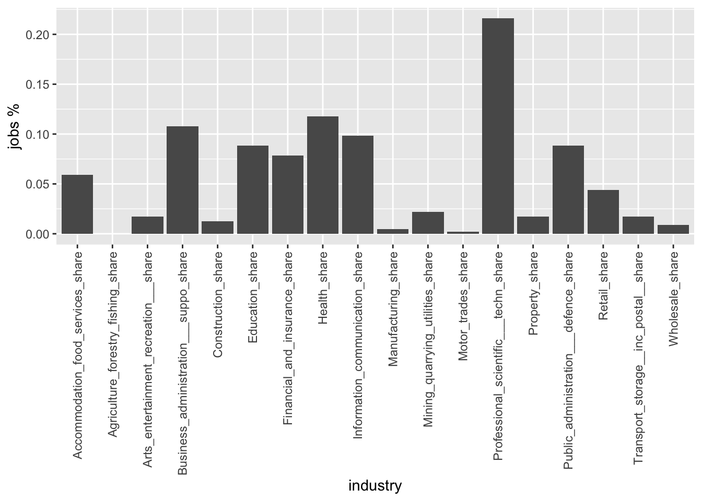
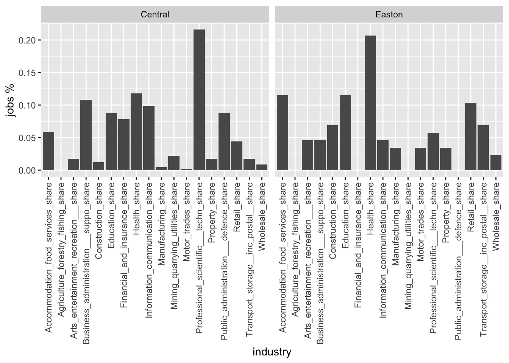

Question: Why should you go through all these efforts to build an API request and download the data in JSON file format instead of just downloading a .csv file?
Practical 1: APIs and urban data
Aims of the practical
Understand the technicalities and the breadth of the urban data landscape
Understand the messiness of real world (urban) data
Access programmatically urban data and understand the benefits of such data access practise.
APIs
Application Programming Interface (APIs) represent a ‘gate’ or otherwise a platform that enables a client (that is you) to interact with a server (for example opendata.bristol.gov.uk). According to AWS (2022):
In the context of APIs, the word Application refers to any software with a distinct function. Interface can be thought of as a contract of service between two applications. This contract defines how the two communicate with each other using requests and responses. Their API documentation contains information on how developers are to structure those requests and responses.
The client’s software (this might be R for example) sends a request to the server requesting specific data. The response is the data the client asked.
More commonly, the client might be a mobile phone app (e.g. train network status app) and the server is the network operator’s server.
APIs can be private or public types. For more inthe description from AWS (2022) here
JSON file format
Although some urban data can be downloaded as a tidy1 table in a .csv format, most APIs will ship data to you in a JSON format.
According to the official JSON website (JSON), JSON
is a lightweight data-interchange format. It is easy for humans to read and write. It is easy for machines to parse and generate. It is based on a subset of the JavaScript Programming Language Standard ECMA-262 3rd Edition - December 1999. JSON is a text format that is completely language independent but uses conventions that are familiar to programmers of the C-family of languages, including C, C++, C#, Java, JavaScript, Perl, Python, and many others. These properties make JSON an ideal data-interchange language.
It adopts a hierarchical structure such as attribute:value instead of the fixed structure of tidy data. Following Singleton, Spielman, and Folch (2017), such attribute:value pairs might be:
“mean income”:“50000”
“internet speed”:“35”
“jobs”:“15000”
These attributes might be organised hierarchically:
(“city”:“Bristol,”mean income”: “27000”, “internet speed”: “55”, “jobs”:(“2019”:“15000”, “2020”:“14000”)), (“city”:“Newcastle,”mean income”: “25000”, “internet speed”: “45”, “jobs”:(“2019”:“11000”, “2020”:“10000”))
Although this format is more verbose (attribute names are repeated) it is more flexible (not all observations need to have all attributes) (Singleton, Spielman, and Folch 2017)
Practical example with API
opendata.bristol.gov.uk offers a lot of data about Bristol. For this example, let’s try to work with Jobs by Ward (by industry) in Bristol 2020. As you can see, this is a small data set with \(34\) observations representing Bristol’s \(34\) Wards. You can visualise these data with the Table tab on the right hand-side and even download a .csv with these data. To begin with, do both of these things.
Then, go to the More Info icon, scroll down on the left hand side and click on I want to use this. You can find the relevant link under View API Resources. We are interested in the GeoJSON. You can view the data in this format and also copy the links to access these data programmatically. The weird output on your screen is the data you requested in JSON format. If you carefully read the URL from right to left you can see some logic on how this URL is built.
So, let’s try to access these data programmatically. First, we need to load the relevant R packages
library(tidyverse)
library(jsonlite)To access the data, we are going to use the function fromJSON() from the jsonlite package. Please check the syntax of this function as well as the other function of this package.
dat <- jsonlite::fromJSON("https://services2.arcgis.com/a4vR8lmmksFixzmB/ArcGIS/rest/services/Jobs_by_Ward_(by_industry)_in_Bristol_2020/FeatureServer/0/query?outFields=*&where=1%3D1&f=geojson", flatten = TRUE)We now have an R object called dat. Let’s try to see how it looks like
typeof(dat)[1] "list"So, this is a list. If you need a reminder for what a list is, see here. Now the difficult part. Let’s try to figure out the structure of this JSON formatted data.
str(dat)List of 2
$ type : chr "FeatureCollection"
$ features:'data.frame': 34 obs. of 28 variables:
..$ type : chr [1:34] "Feature" "Feature" "Feature" "Feature" ...
..$ id : int [1:34] 1 2 3 4 5 6 7 8 9 10 ...
..$ geometry.type : chr [1:34] "Polygon" "Polygon" "Polygon" "Polygon" ...
..$ geometry.coordinates :List of 34
.. ..$ : num [1, 1:7825, 1:2] -2.67 -2.67 -2.67 -2.67 -2.67 ...
.. ..$ : num [1, 1:2140, 1:2] -2.58 -2.58 -2.58 -2.59 -2.59 ...
.. ..$ : num [1, 1:1447, 1:2] -2.6 -2.6 -2.6 -2.6 -2.6 ...
.. ..$ : num [1, 1:874, 1:2] -2.58 -2.58 -2.58 -2.58 -2.58 ...
.. ..$ : num [1, 1:1480, 1:2] -2.56 -2.56 -2.56 -2.56 -2.56 ...
.. ..$ : num [1, 1:1320, 1:2] -2.53 -2.53 -2.53 -2.52 -2.52 ...
.. ..$ : num [1, 1:1032, 1:2] -2.51 -2.51 -2.51 -2.51 -2.51 ...
.. ..$ : num [1, 1:1337, 1:2] -2.51 -2.51 -2.51 -2.51 -2.51 ...
.. ..$ : num [1, 1:1729, 1:2] -2.52 -2.52 -2.52 -2.52 -2.52 ...
.. ..$ : num [1, 1:2372, 1:2] -2.53 -2.53 -2.53 -2.53 -2.53 ...
.. ..$ : num [1, 1:2257, 1:2] -2.56 -2.56 -2.56 -2.56 -2.56 ...
.. ..$ : num [1, 1:1462, 1:2] -2.53 -2.53 -2.53 -2.53 -2.53 ...
.. ..$ : num [1, 1:2277, 1:2] -2.56 -2.56 -2.56 -2.56 -2.56 ...
.. ..$ : num [1, 1:2073, 1:2] -2.62 -2.62 -2.62 -2.62 -2.62 ...
.. ..$ : num [1, 1:1301, 1:2] -2.63 -2.63 -2.63 -2.63 -2.63 ...
.. ..$ : num [1, 1:1327, 1:2] -2.63 -2.63 -2.63 -2.63 -2.63 ...
.. ..$ : num [1, 1:783, 1:2] -2.61 -2.61 -2.62 -2.62 -2.62 ...
.. ..$ : num [1, 1:897, 1:2] -2.6 -2.6 -2.6 -2.6 -2.6 ...
.. ..$ : num [1, 1:807, 1:2] -2.58 -2.58 -2.58 -2.58 -2.58 ...
.. ..$ : num [1, 1:811, 1:2] -2.58 -2.58 -2.58 -2.58 -2.58 ...
.. ..$ : num [1, 1:893, 1:2] -2.62 -2.62 -2.62 -2.62 -2.62 ...
.. ..$ : num [1, 1:551, 1:2] -2.61 -2.61 -2.61 -2.61 -2.61 ...
.. ..$ : num [1, 1:498, 1:2] -2.6 -2.6 -2.6 -2.6 -2.6 ...
.. ..$ : num [1, 1:731, 1:2] -2.59 -2.59 -2.59 -2.59 -2.59 ...
.. ..$ : num [1, 1:1149, 1:2] -2.56 -2.56 -2.56 -2.56 -2.56 ...
.. ..$ : num [1, 1:971, 1:2] -2.56 -2.56 -2.56 -2.56 -2.56 ...
.. ..$ : num [1, 1:748, 1:2] -2.55 -2.55 -2.55 -2.55 -2.55 ...
.. ..$ : num [1, 1:1429, 1:2] -2.55 -2.55 -2.55 -2.55 -2.55 ...
.. ..$ : num [1, 1:732, 1:2] -2.58 -2.58 -2.58 -2.58 -2.58 ...
.. ..$ : num [1, 1:2684, 1:2] -2.62 -2.62 -2.62 -2.62 -2.62 ...
.. ..$ : num [1, 1:1265, 1:2] -2.62 -2.62 -2.62 -2.62 -2.62 ...
.. ..$ : num [1, 1:733, 1:2] -2.61 -2.61 -2.61 -2.61 -2.61 ...
.. ..$ : num [1, 1:664, 1:2] -2.58 -2.58 -2.58 -2.58 -2.58 ...
.. ..$ : num [1, 1:846, 1:2] -2.57 -2.57 -2.57 -2.57 -2.57 ...
..$ properties.OBJECTID : int [1:34] 1 2 3 4 5 6 7 8 9 10 ...
..$ properties.Ward_code_1 : chr [1:34] "E05010886" "E05010901" "E05010913" "E05010904" ...
..$ properties.Ward : chr [1:34] "Avonmouth and Lawrence Weston" "Henbury and Brentry" "Southmead" "Horfield" ...
..$ properties.Period : int [1:34] 2020 2020 2020 2020 2020 2020 2020 2020 2020 2020 ...
..$ properties.Agriculture_forestry_fishing : int [1:34] 10 0 0 0 0 0 0 0 0 0 ...
..$ properties.Mining_quarrying_utilities : int [1:34] 700 0 0 0 150 0 0 0 0 0 ...
..$ properties.Manufacturing : int [1:34] 1500 50 10 100 35 50 600 40 35 900 ...
..$ properties.Construction : int [1:34] 1500 45 50 50 50 125 200 125 150 500 ...
..$ properties.Motor_trades : int [1:34] 1000 15 25 10 50 40 35 50 75 300 ...
..$ properties.Wholesale : int [1:34] 4000 100 10 10 100 20 250 50 0 450 ...
..$ properties.Retail : int [1:34] 1000 150 150 125 1000 500 75 125 50 200 ...
..$ properties.Transport_storage__inc_postal_ : int [1:34] 5000 75 35 20 50 300 45 20 25 350 ...
..$ properties.Accommodation_food_services : int [1:34] 250 100 50 150 100 300 75 100 35 175 ...
..$ properties.Information_communication : int [1:34] 175 50 100 150 125 50 150 100 20 400 ...
..$ properties.Financial_and_insurance : int [1:34] 15 0 10 0 0 35 10 0 0 10 ...
..$ properties.Property : int [1:34] 125 15 10 50 100 30 40 15 10 20 ...
..$ properties.Professional_scientific___techn: int [1:34] 500 75 50 150 175 125 200 75 40 200 ...
..$ properties.Business_administration___suppo: int [1:34] 1500 125 250 225 200 125 125 450 15 1250 ...
..$ properties.Public_administration___defence: int [1:34] 250 0 40 250 0 200 0 0 0 0 ...
..$ properties.Education : int [1:34] 700 350 400 300 500 800 350 250 40 400 ...
..$ properties.Health : int [1:34] 450 700 1000 12000 450 1500 350 500 75 125 ...
..$ properties.Arts_entertainment_recreation__: int [1:34] 250 175 200 300 350 100 50 75 10 75 ...
..$ properties.Shape__Area : num [1:34] 55226760 10024921 7056717 5886048 11020282 ...
..$ properties.Shape__Length : num [1:34] 39581 20425 15018 10857 19802 ...Well, it’s complicated. Looking on the above output of list() the object that looks most useful to us is the dat$features.
Question: Based on the output of list(), why do you think is dat$features the most useful part of dat for us?
And if you want to see how the dataframe dat$features looks like, the below function will show the first five rows.
glimpse(dat$features)Rows: 34
Columns: 28
$ type <chr> "Feature", "Feature", "Feat…
$ id <int> 1, 2, 3, 4, 5, 6, 7, 8, 9, …
$ geometry.type <chr> "Polygon", "Polygon", "Poly…
$ geometry.coordinates <list> <<array[1 x 7825 x 2]>>, <…
$ properties.OBJECTID <int> 1, 2, 3, 4, 5, 6, 7, 8, 9, …
$ properties.Ward_code_1 <chr> "E05010886", "E05010901", "…
$ properties.Ward <chr> "Avonmouth and Lawrence Wes…
$ properties.Period <int> 2020, 2020, 2020, 2020, 202…
$ properties.Agriculture_forestry_fishing <int> 10, 0, 0, 0, 0, 0, 0, 0, 0,…
$ properties.Mining_quarrying_utilities <int> 700, 0, 0, 0, 150, 0, 0, 0,…
$ properties.Manufacturing <int> 1500, 50, 10, 100, 35, 50, …
$ properties.Construction <int> 1500, 45, 50, 50, 50, 125, …
$ properties.Motor_trades <int> 1000, 15, 25, 10, 50, 40, 3…
$ properties.Wholesale <int> 4000, 100, 10, 10, 100, 20,…
$ properties.Retail <int> 1000, 150, 150, 125, 1000, …
$ properties.Transport_storage__inc_postal_ <int> 5000, 75, 35, 20, 50, 300, …
$ properties.Accommodation_food_services <int> 250, 100, 50, 150, 100, 300…
$ properties.Information_communication <int> 175, 50, 100, 150, 125, 50,…
$ properties.Financial_and_insurance <int> 15, 0, 10, 0, 0, 35, 10, 0,…
$ properties.Property <int> 125, 15, 10, 50, 100, 30, 4…
$ properties.Professional_scientific___techn <int> 500, 75, 50, 150, 175, 125,…
$ properties.Business_administration___suppo <int> 1500, 125, 250, 225, 200, 1…
$ properties.Public_administration___defence <int> 250, 0, 40, 250, 0, 200, 0,…
$ properties.Education <int> 700, 350, 400, 300, 500, 80…
$ properties.Health <int> 450, 700, 1000, 12000, 450,…
$ properties.Arts_entertainment_recreation__ <int> 250, 175, 200, 300, 350, 10…
$ properties.Shape__Area <dbl> 55226760, 10024921, 7056717…
$ properties.Shape__Length <dbl> 39581.107, 20424.954, 15018…Looking into the above, I can think of the the following necessary data cleaning and wrangling steps:
remove the first five columns as they don’t include any useful data
remove the string “properties.” from the column names
although not necessary, it is common practice for the first columns to contain identification data such as the ward names and codes.
To do all the above, we will use the below functions from the dplyr package, which is part of the tidyverse ecosystem.
dat <- dat$features %>%
select(-type, -id, -geometry.type, -geometry.coordinates, -properties.OBJECTID, -properties.Shape__Area,
-properties.Shape__Length) %>% # remove useless columns
rename_with(~sub("properties.", "", .)) %>% # ~ introduces a formula: function `sub` substitutes (in other words replaces) the string "properties." with an empty sting "" for all columns (symbol .)
relocate(Ward, Ward_code_1) %>% # looks better
rename(Ward_code = Ward_code_1) %>% # as above, Ward_code looks better than Ward_code_1
glimpse() # a glimpse of the outputRows: 34
Columns: 21
$ Ward <chr> "Avonmouth and Lawrence Weston", "Henb…
$ Ward_code <chr> "E05010886", "E05010901", "E05010913",…
$ Period <int> 2020, 2020, 2020, 2020, 2020, 2020, 20…
$ Agriculture_forestry_fishing <int> 10, 0, 0, 0, 0, 0, 0, 0, 0, 0, 0, 0, 0…
$ Mining_quarrying_utilities <int> 700, 0, 0, 0, 150, 0, 0, 0, 0, 0, 30, …
$ Manufacturing <int> 1500, 50, 10, 100, 35, 50, 600, 40, 35…
$ Construction <int> 1500, 45, 50, 50, 50, 125, 200, 125, 1…
$ Motor_trades <int> 1000, 15, 25, 10, 50, 40, 35, 50, 75, …
$ Wholesale <int> 4000, 100, 10, 10, 100, 20, 250, 50, 0…
$ Retail <int> 1000, 150, 150, 125, 1000, 500, 75, 12…
$ Transport_storage__inc_postal_ <int> 5000, 75, 35, 20, 50, 300, 45, 20, 25,…
$ Accommodation_food_services <int> 250, 100, 50, 150, 100, 300, 75, 100, …
$ Information_communication <int> 175, 50, 100, 150, 125, 50, 150, 100, …
$ Financial_and_insurance <int> 15, 0, 10, 0, 0, 35, 10, 0, 0, 10, 15,…
$ Property <int> 125, 15, 10, 50, 100, 30, 40, 15, 10, …
$ Professional_scientific___techn <int> 500, 75, 50, 150, 175, 125, 200, 75, 4…
$ Business_administration___suppo <int> 1500, 125, 250, 225, 200, 125, 125, 45…
$ Public_administration___defence <int> 250, 0, 40, 250, 0, 200, 0, 0, 0, 0, 4…
$ Education <int> 700, 350, 400, 300, 500, 800, 350, 250…
$ Health <int> 450, 700, 1000, 12000, 450, 1500, 350,…
$ Arts_entertainment_recreation__ <int> 250, 175, 200, 300, 350, 100, 50, 75, …Let’s try now to do some analysis based on these data and create some outputs.
dat %>% mutate(total = rowSums(across(c(4:21))), # total jobs in a ward
across(c(4:21), # select the columns you are interested in
.names = "{col}_share") / total) %>% # divide these columns by total to create industry share within ward
# and name the new columns as oldname_share
select(1:2, 23:40) %>%
pivot_longer(!c(Ward, Ward_code), # These are the columns I am 'pivoting'
names_to = "industry", # This is how I will name the column with all the industries ...
values_to = "jobs_share") %>% # ... and the column with the jobs percentage
# Look https://tidyr.tidyverse.org/articles/pivot.html to
# understand the long to wide / wide to long transformations.
filter(Ward == "Central") %>% # Let's focus on Central Bristol
ggplot(aes(x=industry, y=jobs_share)) + # ... and create a bar chart for it jobs distribution
geom_bar(stat = "identity") +
# to understand the "identity part go on the Details section of the geom_bar documentation:
# https://www.rdocumentation.org/packages/ggplot2/versions/1.0.1/topics/geom_bar
scale_x_discrete(guide = guide_axis(angle = 90)) + # This line rotates the x labels,
ylab("jobs %") # and here we rename the y axis. 
Now, let’s do something slightly more interesting. Let’s create two plots to compare the job distribution between two Bristol wards.
dat %>% mutate(total = rowSums(across(c(4:21))), # total jobs in a ward
across(c(4:21), # select the columns you are interested in
.names = "{col}_share") / total) %>% # divide these columns by total to create industry share within ward
# and name the new columns as oldname_share
select(1:2, 23:40) %>%
pivot_longer(!c(Ward, Ward_code), # These are the columns I am 'pivoting'
names_to = "industry", # This is how I will name the column with all the industries ...
values_to = "jobs_share") %>% # ... and the column with the jobs percentage
# Look https://tidyr.tidyverse.org/articles/pivot.html to
# understand the long to wide / wide to long transformations.
filter(Ward == "Central" |
Ward == "Easton") %>% # Let's focus on Easton and Central Bristol
ggplot(aes(x=industry, y=jobs_share)) + # ... and create a bar chart for it jobs distribution
geom_bar(stat = "identity") +
scale_x_discrete(guide = guide_axis(angle = 90)) + # This line rotates the x labels,
ylab("jobs %") + # and here we rename the y axis.
facet_wrap(vars(Ward), ncol = 2) # facet_wrap creates two graphs based on `ward` and puts one next to each other
Well done! You‚Äôve just utilised Bristol‚Äôs open data and became part of the urban open data revolution üòÉ.
Obviously the x labels are rather ugly.
Task: using and tweaking the code provided here, can you rename these labels?
Next task: Search for some other interesting data from opendata.bristol.gov.uk, access it programmatically, do the necessary data wrangling and produce some graphs in a new .Rmd document. Make sure to knit it as .html.
If this is to easy for you, why don’t you check the new Quarto format.
Accessing APIs using existing R packages
Now you might be lucky and somebody else has already done all the infrastructural / back-end work in order for you to easily interrogate an API and access their data. How would this look like? Like another R package. Here is a list with a few examples:
nomisris a package that allows you to access Nomis data withR. Find here an introduction.tidysencusis part of thetidyverseecosystem and offers access to the US Census. This is the link. Pay extra attention to the spatial data option.The city of Toronto offers an
Rpackage to access City of Toronto Open Data Portal.See a relevant book by Bauer, Landesvatter, and Behrens (2022) available here.
Another task: On your own time, play with these packages and access some of the (urban) data they offer.
References
AWS, Amazon. 2022. “What Is an API? - API Beginner’s Guide - AWS — Aws.amazon.com.” https://aws.amazon.com/what-is/api/#:~:text=API%20stands%20for%20Application%20Programming,other%20using%20requests%20and%20responses.
Bauer, P. C., Landesvatter C., and L. Behrens. 2022. “APIs for Social Scientists: A Collaborative Review V1.0.” https://doi.org/https://doi.org/10.5281/zenodo.6798690.
JSON. “JSON — Json.org.” https://www.json.org/json-en.html.
Singleton, Alex D, Seth Spielman, and David Folch. 2017. Urban Analytics. Sage.
Footnotes
Every column is a variable; every row is an observation; every cell is a single value. See [here])(https://cran.r-project.org/web/packages/tidyr/vignettes/tidy-data.html) for more info↩︎